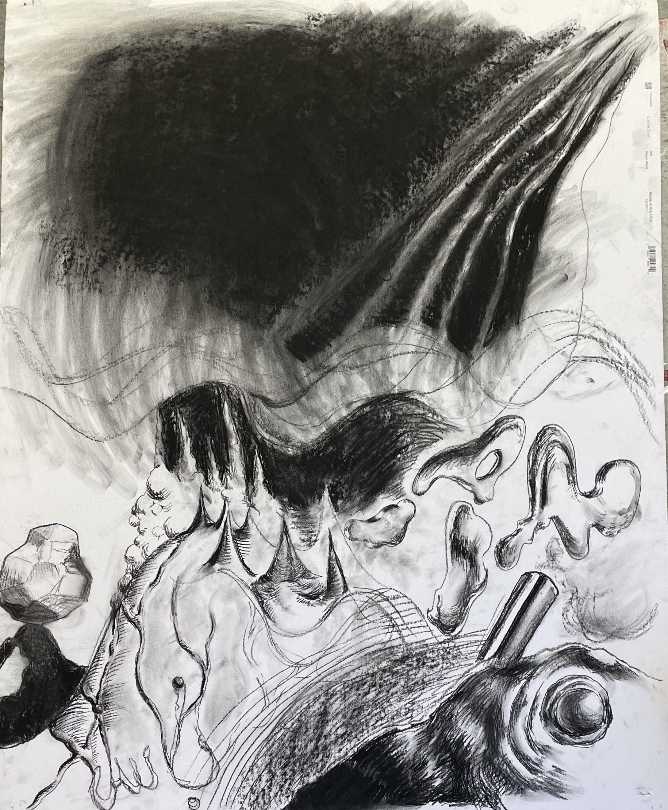
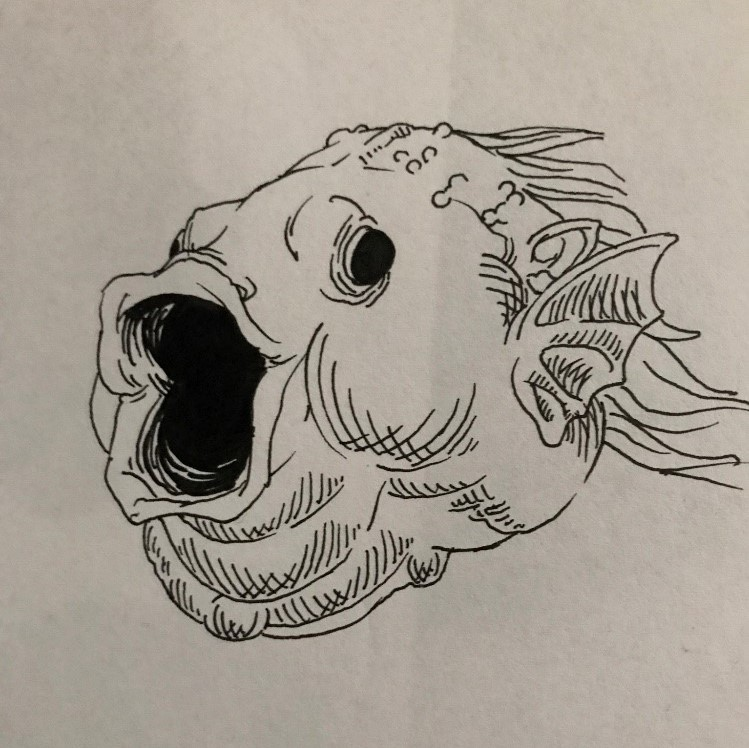
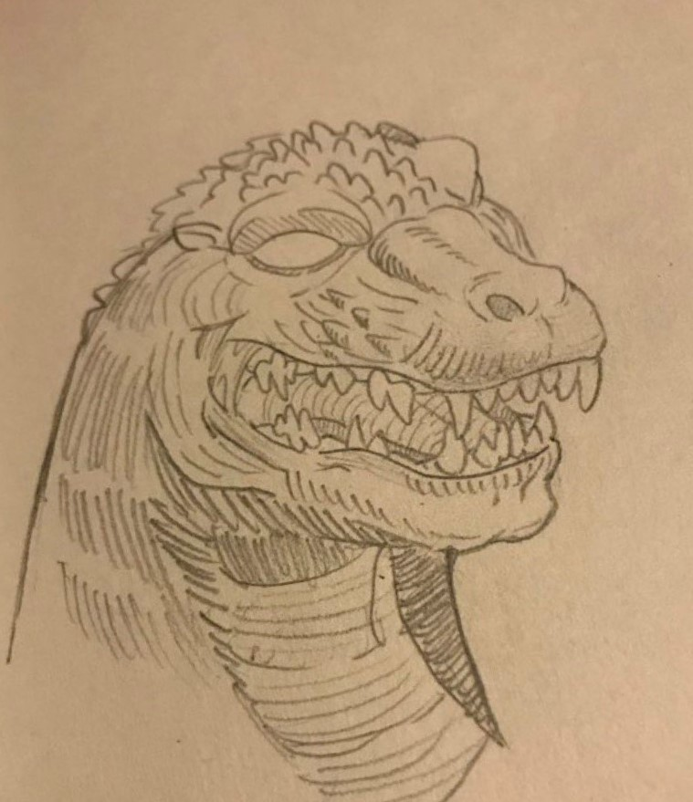
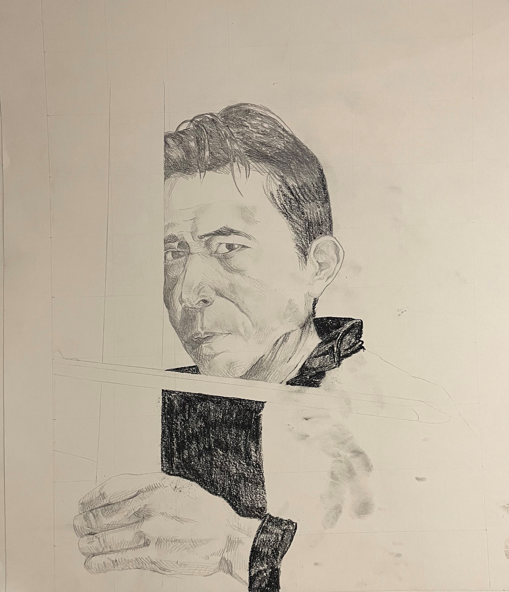
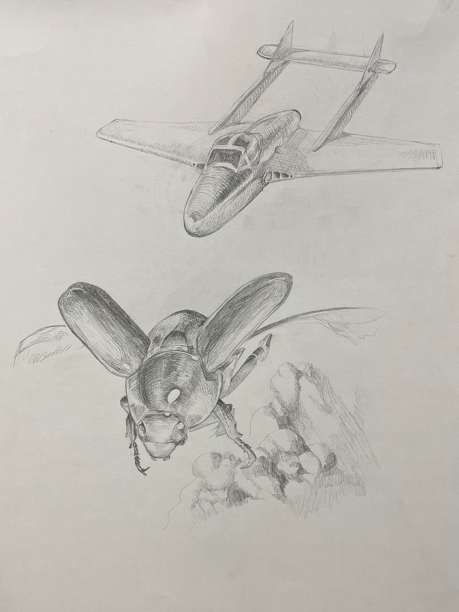
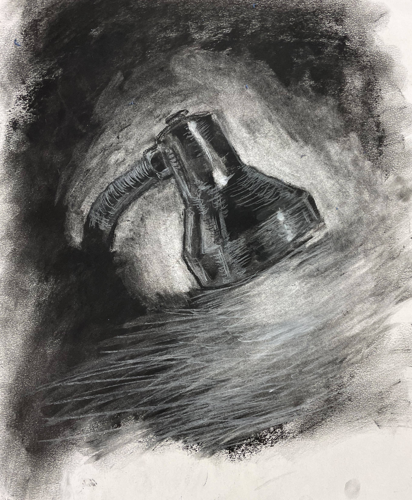
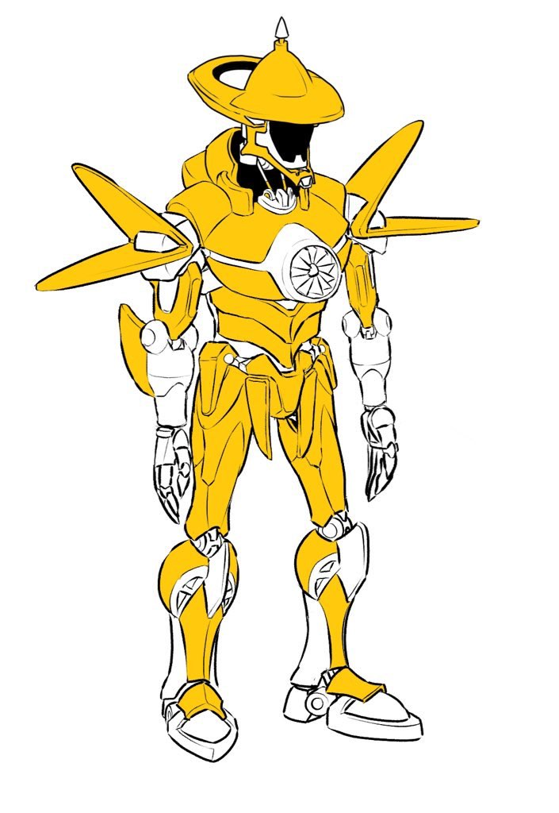
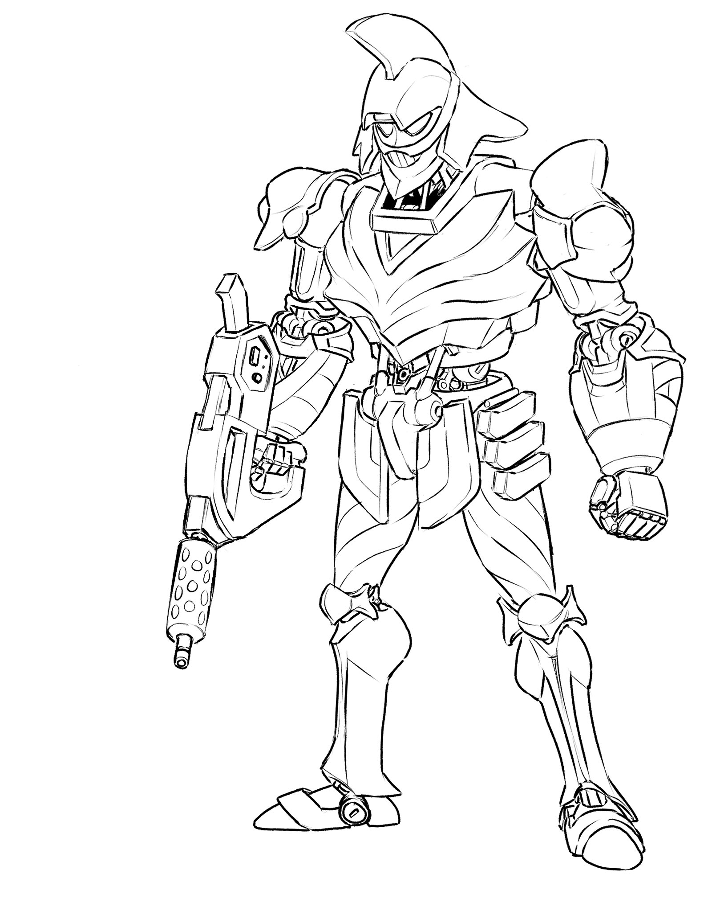
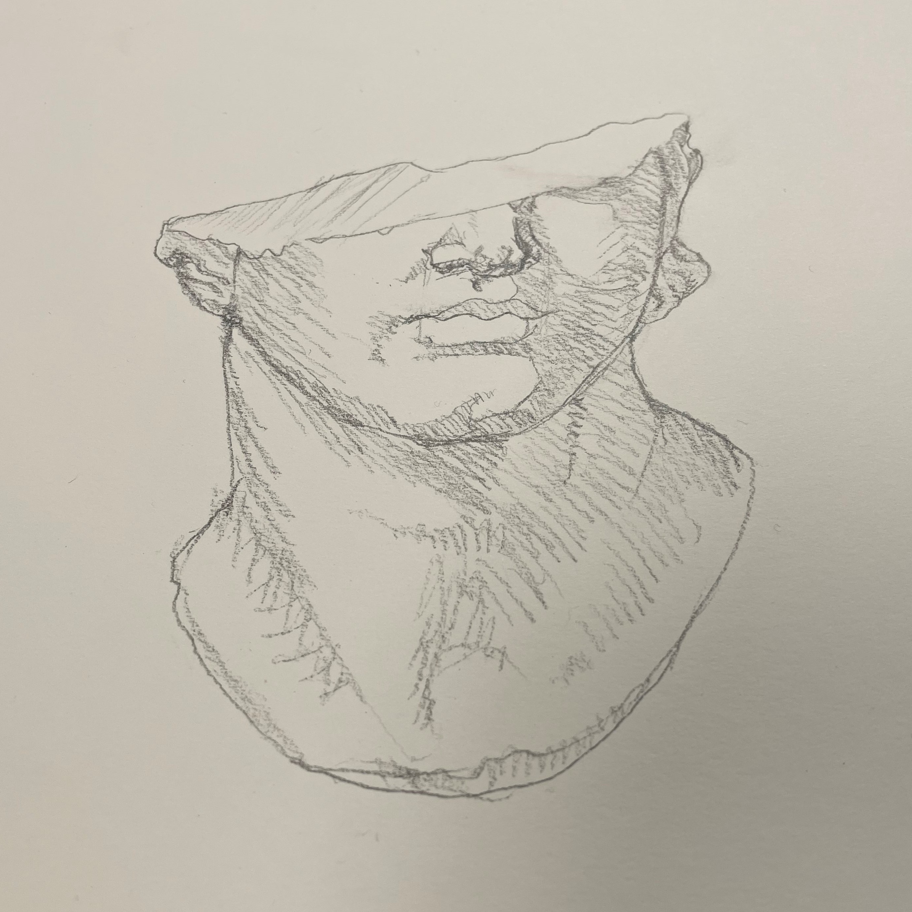

An abstract charcoal drawing design for my art class in response to music.

A bass fish puckering its lips

A sketch of godzilla

Light drawing of Japanese artist Susumu Hirasawa

A scarab being chased by a de Havilland Vampire

A still life charcoal drawing of a lamp from my bedroom

A colored mech without a face

Inspired by Maximilian fluted armor

Study of a Roman bust